Hip-hop is a genre that was widely rejected by many, categorized as ghetto, reckless, and a disgrace to music. Now, this prolific genre is one of the most popular in the entire world. When people think hip-hop, they usually think rap, but that is not all there is to it. There are four foundational pillars that have created a culture extending far beyond music:
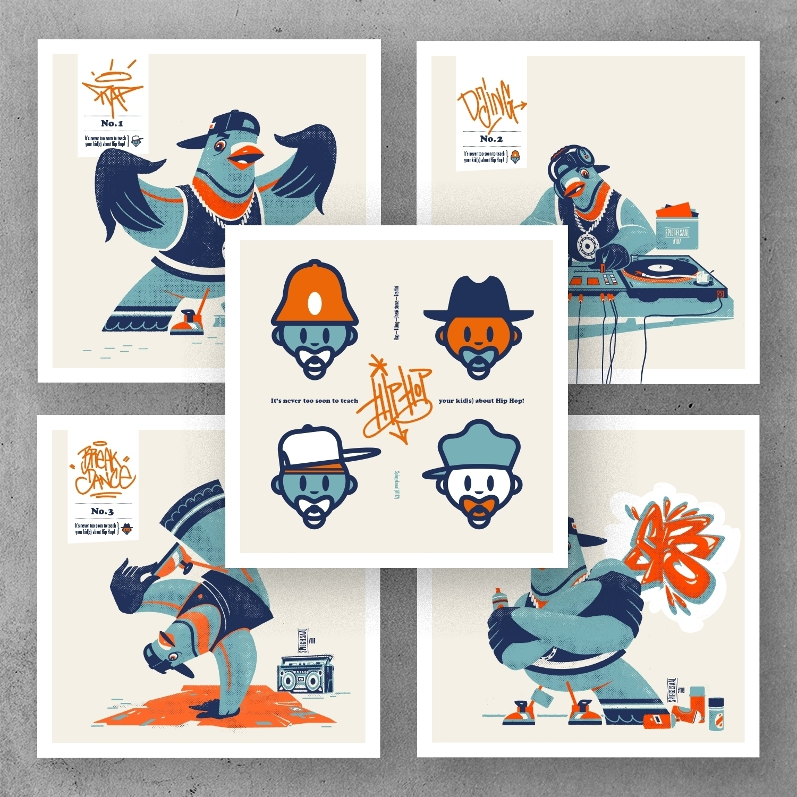
It is honestly phenomenal to see how this genre has transcended what it originally was. Its influence is now woven into musical styles through electronic beats, into fashion through baggy clothes and chains, into art through poetic justice in rapping, and into media, education, and entertainment. Hip-hop has lived on and continues to grow from generation to generation.
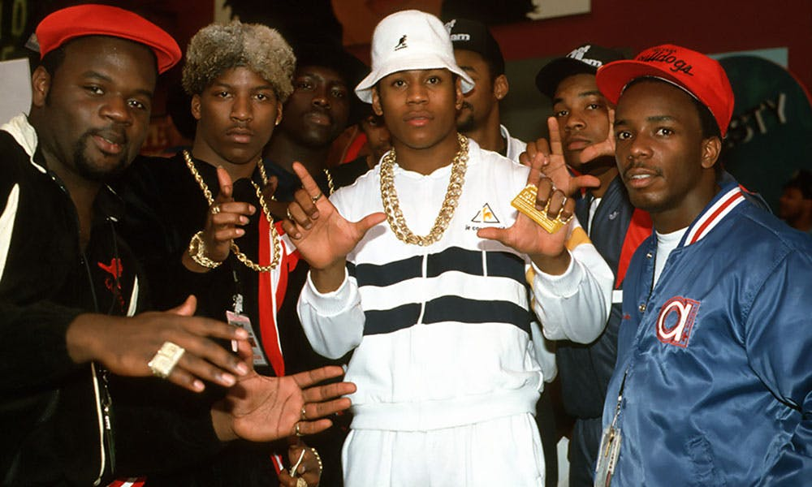
The movement of hip-hop is often overlooked because of the negative connotation historically tied to the genre. It began in the Bronx, New York, during the early 1970s, emerging as a reflection of the struggles brought on by post-industrialism, political discourse, racism, and a rapidly shifting socioeconomic balance.
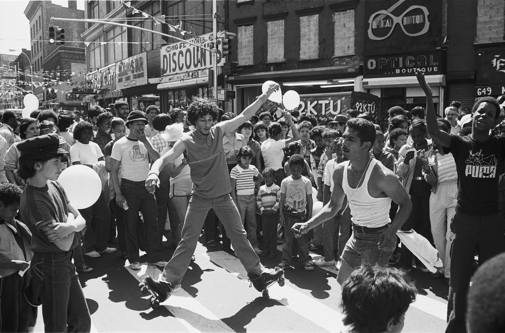
Due to these challenges, many middle-class residents moved to the suburbs, leading to significant demographic changes in the city. Minorities such as African-Americans, Puerto Ricans, and Caribbean immigrants were left to face increasing poverty, crime, and gang violence. Despite these hardships, they found powerful ways to express themselves and hip-hop became a voice for their resilience. Abandoned buildings and city walls became canvases for the youth’s creativity and resistance.
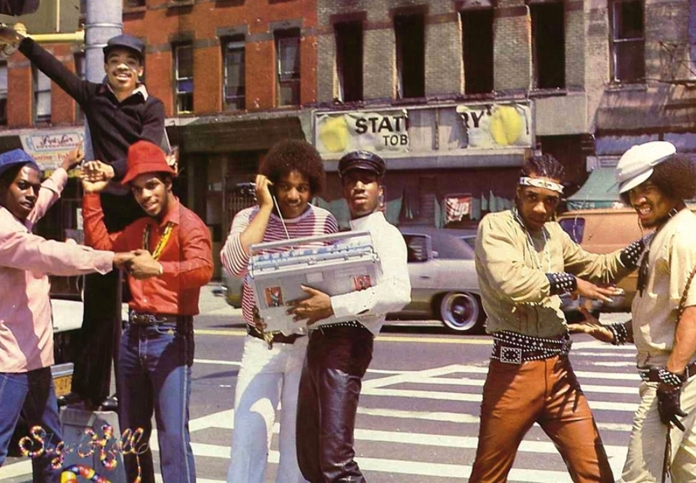
It is fascinating to see how music has the power to bring people together, and hip-hop is no exception.
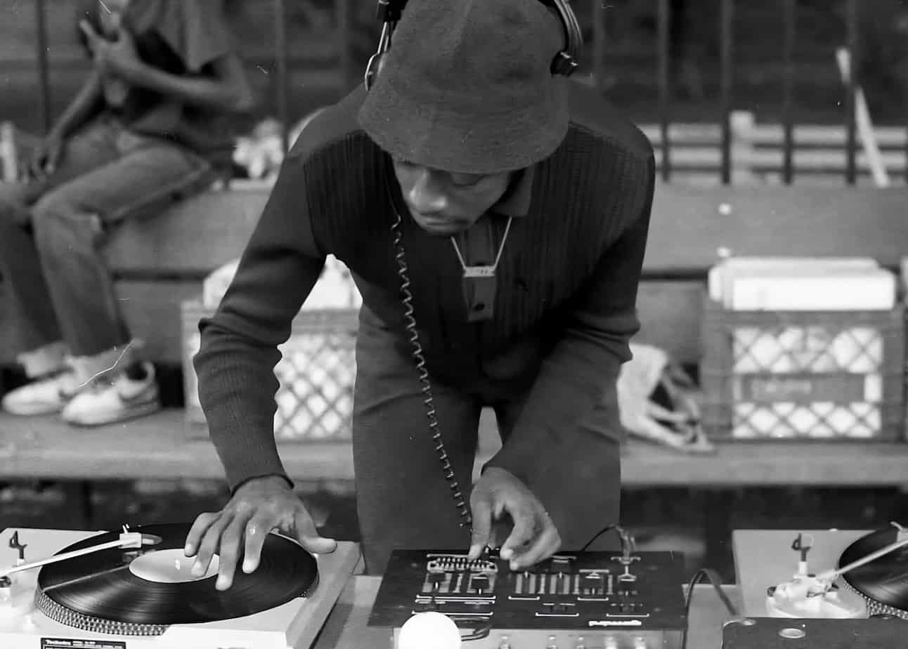
DJ Kool Herc, often regarded as one of the founding fathers of hip-hop, played a crucial role in shaping the genre. Born in Jamaica, Herc drew inspiration from the sound systems and rhythmic styles of his Caribbean heritage. When he moved to the Bronx, he blended these elements with American funk and soul, laying the groundwork for hip-hop music and culture.
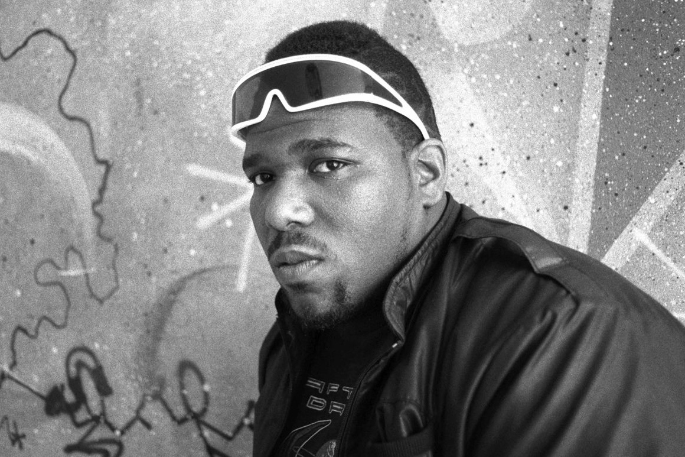
Afrika Bambaataa, known as the "Godfather" of hip-hop, was another essential figure in the movement’s early days. A former gang leader turned activist, Bambaataa used music to promote peace and unity. He founded the Universal Zulu Nation, encouraging young people from different backgrounds to use hip-hop as a force for positive social change through music, dance, and art.
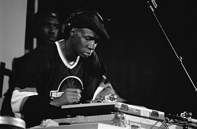
Grandmaster Flash made a monumental impact on hip-hop's evolution. Renowned for his technical innovations, he pioneered methods like cutting, backspinning, and scratching. His inventive techniques revolutionized DJing, setting the standard for record manipulation that DJs around the world continue to use today.
Hip-hop has evolved significantly since its inception, with new artists and styles emerging regularly. Many argue that the genre has strayed from its roots, while others believe that this evolution is a natural progression. The fusion of hip-hop with other genres, such as pop, rock, and electronic music, has led to exciting collaborations and innovative sounds. However, it is essential to remember the pioneers who laid the groundwork for this vibrant culture.
Pioneers of the genre see the new generation of hip-hop artists as toxic. They believe that the genre has lost its essence, and that the new generation is not doing enough to preserve the culture and spreading a negative connotation, for the once liberating genre. That is far from the truth. Artists like J.Cole, & Kendrick Lamar, have acted as trialblazers for the genre and have created a blend of old/new school hip-hop.
| Artist | Impact |
|---|---|
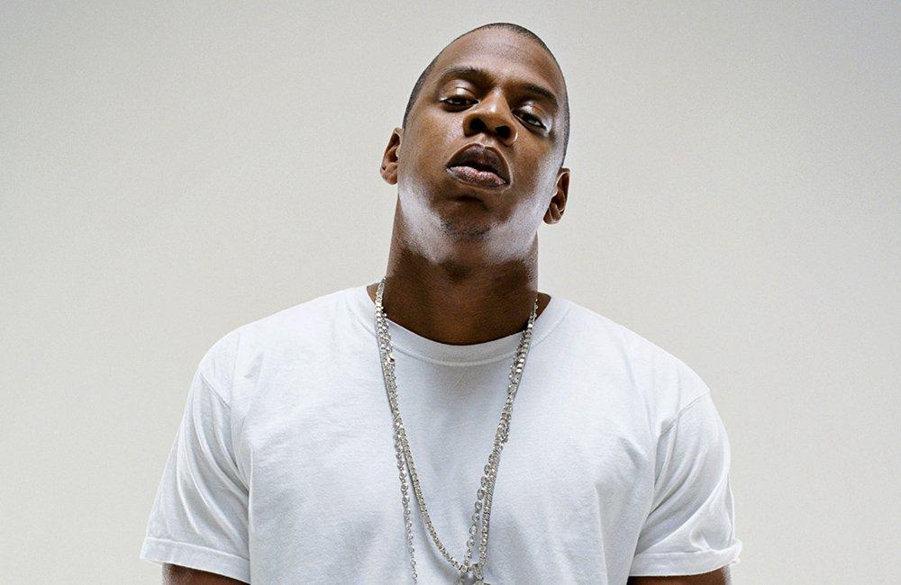 |
Jay-Z aka HovJay-Z is not only one of the greatest rappers of all time, but also a business mogul who helped redefine hip-hop’s possibilities. From founding Roc-A-Fella Records to becoming a billionaire entrepreneur, he demonstrated that hip-hop could be a lasting force in music, culture, and business. His influence stretches beyond music into fashion, sports, and social justice. Top song: Empire State of Mind Popular Albums: The Blueprint, 4:44 |
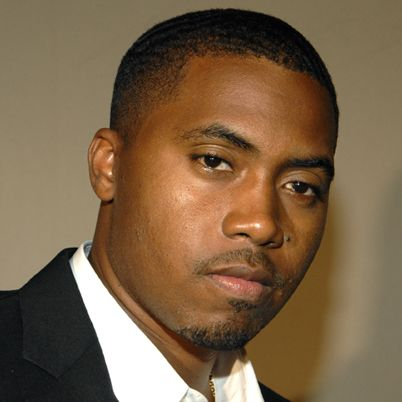 |
Nas aka Nasty NasNas is celebrated for his vivid storytelling, lyrical mastery, and critical perspective on urban life. His debut album, Illmatic, is hailed as one of the greatest hip-hop albums ever made. Nas helped elevate rap into a poetic form of art, offering reflections on struggle, ambition, and resilience in the face of systemic adversity. Top song: N.Y. State of Mind Popular Albums: Illmatic, King's Disease |
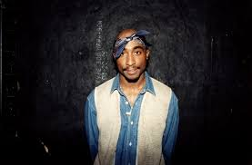 |
2PacTupac Shakur remains one of the most influential figures in hip-hop history. Known for blending activism with art, Tupac’s music addressed racism, inequality, poverty, and violence. His emotional vulnerability, political insight, and sheer passion made him a global symbol of resistance and authenticity in rap culture. Top song: Changes Popular Albums: All Eyez on Me, Me Against the World |
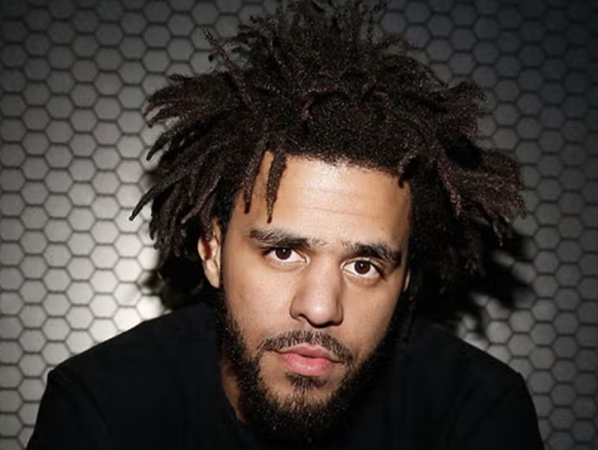 |
J. Cole - Cole WorldJ. Cole is renowned for his introspective lyrics, storytelling, and ability to address societal and personal issues without relying heavily on features. His music often promotes self-awareness, resilience, and gratitude. Cole's consistency and authenticity have earned him a devoted fanbase and lasting respect in the rap community. Top song: Love Yourz Popular Albums: 2014 Forest Hills Drive, Born Sinner(Deluxe Version) |
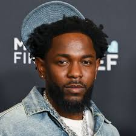 |
Kendrick Lamar - K. DotKendrick Lamar is regarded as a modern-day poet, using his music to tackle complex themes such as race, religion, and inner conflict. His albums like good kid, m.A.A.d city and To Pimp a Butterfly have been praised for their conceptual brilliance and social commentary, influencing not just hip-hop, but culture at large. Top song: Alright Popular Albums: To Pimp a Butterfly, DAMN. |
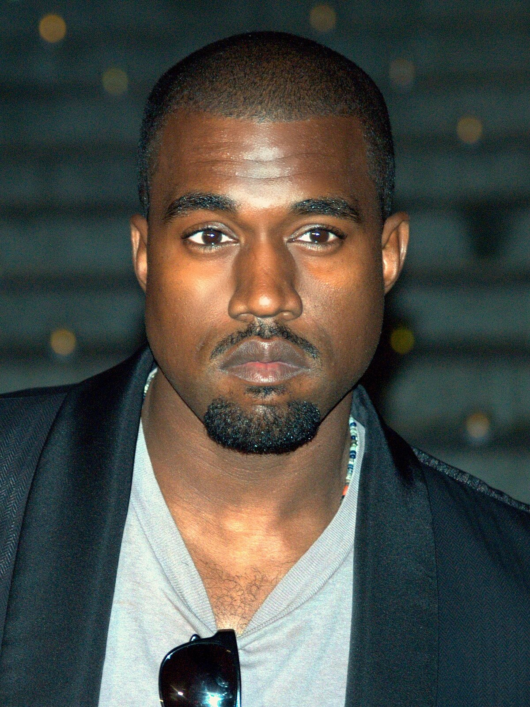 |
Kanye West - YeKanye West revolutionized hip-hop production and expanded the artistic scope of rap music. From his soul-sampling beats to his genre-defying albums like 808s & Heartbreak and My Beautiful Dark Twisted Fantasy, Kanye challenged norms, inspired innovation, and influenced an entire generation of artists across multiple genres. Top song: Power Popular Albums: The College Dropout, Graduation |
From its beginnings in the Bronx as a voice for the voiceless, Hip-Hop has grown into a global phenomenon shaping music, fashion, language, and identity. It has given rise to storytellers, visionaries, and truth-tellers who continue to redefine what music can do. But Hip-Hop doesn’t stand alone.
Behind every great rap verse, there's often a soulful hook. Behind every beat, a melody rooted in emotion. That connection leads us to another genre that even hip-hop must bow down to. It isx powerful, expressive, and culture-shaping: Rhythm and Blues.
Roots of R&B Back to the Start